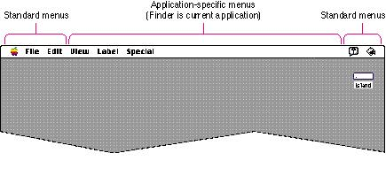
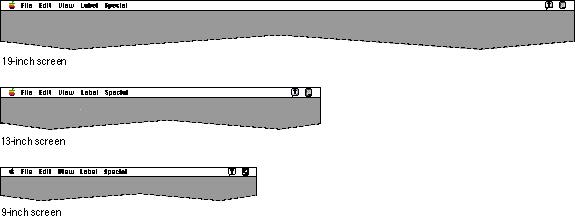
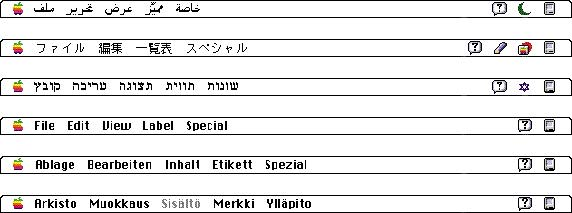
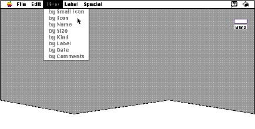

|
The Menu BarThe menu bar extends across the top of the screen and contains words and icons that serve as the title of each menu. It should be visible and always available to use. Nothing should ever appear on top of the menu bar or obscure it from view. The menu bar should always contain the standard menus--the Apple menu, the File menu, the Edit menu, the Help menu, and the Application menu. The Keyboard menu is an optional standard menu that appears when the user installs a script system other than the Roman Script System. The titles of the standard menus never change. (The titles of the Apple, Help, Keyboard, and Application menus are icons rather than words.) The standard menus are described in the section "Standard Macintosh Menus," beginning on page 77.You can include as many menus in between these standard menus as are essential to your application and as fit on the smallest screen on which your application runs. It's a good idea to leave some room in the menu bar, both for localization and for menus added by third-party products such as utilities. Figure 4-2 shows the menu bar as it looks when the Finder is the current application, and points out the space you have for application-specific menus.  The width of the menu bar depends on the screen size of the user's monitor. Figure 4-3 shows menu bars of three different widths and how much space is used by the Finder's menu titles on each screen.  |
|
|
Your
application's menu titles should remain constant. This
constancy adds to the user's sense of perceived stability
of the interface and helps users identify applications when
they switch from one to another. For a menu title, use a
word that reflects the category of the commands in each
menu. For example, the Edit menu contains commands that
change, or "edit," a document's contents. When you choose
menu titles, think about the word lengths in different
languages so that your menu titles will fit in the menu bar
even in the longest case when you localize them. Figure 4-4 shows the Finder menu bar in
six different languages. You can see the variation in the
length of simple menu titles. See Guide to Macintosh Software Localization for lists of standard menu titles in different locales around the world. |
|
Figure 4-4 The Finder menu bar in six languages
 Menu titles always remain visible. If all the operations in a given menu are currently unavailable (that is, the user can't choose them), dim the title by drawing it in gray. The user can still open the menu and see the names of the operations when a menu is dimmed. Figure 4-5 shows a menu bar with an unavailable menu. Figure 4-5 An unavailable menu  The menu bar should be visible at all times to provide a
visual anchor |